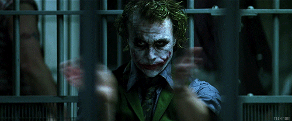
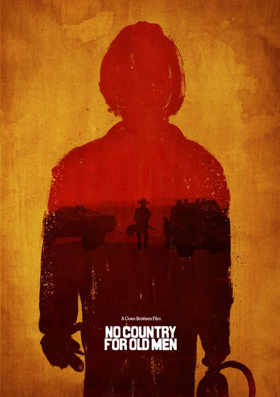

Las películas, hacen parte de nosotros como seres humanos. Se complementan con nosotros y cumplen la vital función de entretenernos. Sin embargo, a lo largo de la historia, este método de diversión ha variado con estilos, épocas y demás componentes que actualemnte, convierten al cine en el mejor método para vencer el aburriemiento. Ponte cómodo, porque te presentaremos las 10 mejores películas del siglo XXI

#10 Sin lugar para los débiles, 2008
